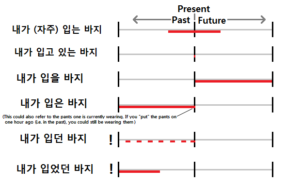

Vocabulary
Nouns:
이유 = reason
Common Usages:
이유 없이 = without reason
개인적인 이유 = personal reason
Examples:
내가 방에 들어가지 않은 이유는 사람들이 너무 많이 있었기 때문이야
= The reason I didn’t go into the room was because there were too many people
저는 제 친구에게 한국으로 이사하고 싶은 이유가 뭐냐고 물어봤어요
= I asked my friend ‘what is the reason you want to move to Korea?’
그 회사원들이 파업 중인 이유는 월급 문제가 아니라 연금에 대한 문제 때문이다
= The reason why those workers are on strike is not because of wages, but because of a problem with the pension
방법 = way, method
Common Usages:
최선의 방법 = the best way
방법론 = methodology
방법을 찾다 = to find a way
한국어를 공부하는 방법 = the way to study Korean
Examples:
여자친구를 감동시키는 가장 좋은 방법은 뭐에요?
= What is the best way to impress one’s girlfriend?
투자자가 없기 때문에 우리는 다른 방법으로 할 거예요
= We will do it another way because we don’t have any investors
예술 = art, the arts
Common Usages:
예술관 = Art Center
전통예술 = traditional art
예술작품 = some sort of work of art
예술가 = artist
Examples: 예술은 저의 삶에 항상 큰 부분이었다 =Art was always a big part of my life
예술을 좋아하지 않는 사람도 있어요 = There are also people who don’t like art
예술가 = artist
Common Usages:
예술가가 되다 = to become an artist
Examples:
그 여자가 한국에서 유명한 예술가예요 = That woman is a famous artist in Korea
내용 = contents
Notes: The word “내용” in Korean is much more common than the English word “contents.” 내용 is broadly used to refer to the “contents” in a book, video, story, or any other source of information. In Korean, it would be common to say something like “저는 그 영화의 내용을 안 좋아했어요” which would translate to “I didn’t like that movie’s content.” In English, it would be more common to just say “I didn’t like that movie.”
Common Usages:
수업 내용 = class contents
책 내용 = book contents
영화 내용 = movie contents
Examples:
저는 어려운 내용을 천천히 설명했어요 = I explained the difficult content slowly
시험을 보기 전 날에 내용을 복습해야 돼요 = I need to review the content on the day before the exam
시간이 부족해서 모든 내용을 가르칠 수 없어요 = I can’t teach all the material because there is a lack of time
학생들이 그 내용을 중학교 때 이미 배웠잖아 = You should know that the students already learned that content in middle school!
종업원 = employee, server, worker
Examples: 종업원을 찾아야 돼요 = I need to find the worker/server/employee
저는 종업원한테 양말이 어디에 있냐고 물어봤어요 = I asked the worker where the socks are
기술 = technology, skill
Common Usages:
첨단 기술 = cutting edge technology
과학 기술 = science and technology
Notes: This word means both “technology” and “skill.” A lot of the times when a word has two difference meanings, their respective Hanja equivalents are different. 기술 is one word, that means both “technology” and “skill.” It doesn’t make sense to me either. The context can tell you what translation should be best.
For example, when used to mean “technology:”
지난 50년 동안 과학 기술은 사람들의 생각을 많이 변화시켰어요
= Technology has really changed the way people think over the past 50 years
다음 10년의 의료기술개발은 대한민국에 중요하다
= The development of medical technology over the next 10 years is important to Korea
On the other hand, when used to mean “skill”
저는 학생들이 과학에 관심이 생기게 하는 기술이 없어요
= I don’t have the skills to make students interested in Science
학교를 다닐 때 실용적인 기술을 많이 배우는 게 아주 중요해요
= It is important to learn practical skills when you attend school
공책 = notebook
Examples:
그 종이를 공책에 풀로 붙이세요 = Stick that paper to your notebook using glue
내가 생각했던 것을 글로 공책에 적었어 = I put the thought I’d had down in writing in a notebook
달력 = calendar
Notes: The word “음력” is used to refer to the lunar calendar (with is semi-followed in Korea, especially by the older generation), and “양력” technically refers to the solar calendar. The word “달력” is used to refer to the actual book of the calendar.
Examples:
그 달력은 틀린 것 같아요 = That calendar seems to be wrong
그것을 달력에 표시해야겠다 = I should mark that on my calendar
주스 = juice
Common Usages:
사과주스 = apple juice
오렌지주스 = orange juice
포도주스 = grape juice
주스를 짜다 = to squeeze juice from something
Examples:
이 주스는 비누 맛 같아요 = this juice tastes like soap
저는 주스를 빨대로 마셨어요 = I drank juice through a straw
우체국 = post office
Notes: The Chinese Character “국” (局) is sometimes used to designate some sort of “place” or “office.” Other examples: 약국 (pharmacy); 방송국 (broadcasting station)
Common Usages:
우체국장 = postmaster
Examples:
이 편지를 부치러 우체국에 가야 돼요 = I need to go to the post office to send this letter
대사관 = embassy
Common Usages:
대한민국대사관 = Korean Embassy
미국대사관 = American Embassy
Examples:
여권을 잃어버려서 대사관에 가야겠어요 = I lost my passport, so I should go to the embassy
폭도들이 대사관 앞에서 항의를 하고 있었어요 = The rioters were protesting in front of the embassy
휴지 = toilet paper
Common Usages:
휴지통 = garbage bin for paper towels
Examples:
휴지를 주세요 = Please give me a tissue
저는 피를 휴지로 닦았어요 = I wiped the blood with a tissue
햄버거 = hamburger
Common Usages:
햄버거를 먹다 = to eat a hamburger
햄버거를 굽다 = to grill/cook a hamburger
Examples:
저는 햄버거 두 개를 먹었어요 = I ate two hamburgers
햄버거 한 개랑 감자 튀김 한 개 주세요 = Please give me one hamburger and one order of French fries
비누 = soap
Common Usages:
액체비누 = liquid soap
비눗물 = soapy water
Examples:
직원들은 음식을 만지기 전에 손을 비누로 씻어야 됩니다 = Employees must first wash their hands with soap before they (can) touch food
숟가락 = spoon
The pronunciation of this word is closer to “숟까락”
Common Usages:
숟가락으로 젓다 = to stir with a spoon
Examples:
저 숟가락을 주세요 = Give me that spoon (please)
숟가락이 없는 사람이 있어요? = Is there anybody who doesn’t have a spoon?
숟가락으로 이렇게 비비면 돼요 = You can mix it with a spoon like this
간호사 = nurse
Common Usages:
수간호사 = head nurse
Examples:
대부분 간호사들은 여자예요 = Most nurses are women
그 사람은 간호사인 것 같아요 = That person seems to be a nurse
캐나다에서는 간호대학을 졸업하자마자 간호사 일자리를 잡을 수 있어요 = In Canada, as soon as you graduate from nursing school/college, you can find a position as a nurse
약국 = pharmacy
The pronunciation of this word is closer to “약꾹”
Examples:
이 약을 약국에서 처방 없이 살 수 있어요
= You can buy this medicine in a pharmacy without a prescription
약사랑 잠깐 얘기하러 약국에 가야 돼요
= I need to go to the pharmacy to talk with the pharmacist for a minute
사회 = community, society
Common Usages:
사회복지 = social welfare
사회봉사 = community service/volunteering
사회적이다 = social
국제사회 = international community
사회화 = socialization
Examples:
빈부격차가 사회적인 문제이다 = The gap between the rich and the poor is a social problem
인간에게는 사회에 있다는 느낌이 중요해요 = A sense/feeling of belonging to a community is important to mankind
충격 = shock, impact
Common Usages:
충격을 받다 = to be shocked (literally: to receive shock)
충격파 = shock wave
충격적이다 = shocking
Examples:
그 부부가 이혼했다는 것은 충격적이에요 = It is shocking that that couple got divorced
저는 그 소식을 듣고 충격을 받았어요 = I was shocked when I heard the news
법 = law
Common Usages:
법원 = a court of law
문법 = grammar (literally – writing laws)
법칙 = a law (usually in science or mathematics, for example: “the law of conservation of mass”
법을 시행하다 = to enforce a law
법을 어기다 = to break a law
법을 개정하다 = to change/amend a law
법을 따르다 = to follow a law
Examples:
시민들은 법을 따라야 돼요 = Citizens must follow the law
법을 어기면 벌금을 내야 되거나 징역선고를 받을 수도 있다 = When you break the law a fine has to be paid, or there is also the possibility of receiving a prison sentence
시민 = citizen
Common Usages:
시민권 = citizenship
Examples: 그
뉴스는 시민들을 흥분시켰어요 = That news excited the public/citizens
저의 아버지는 한국시민이에요 = My father is a Korean citizen
이 문제는 시민보건에 아주 중요한 것 같아요 = That problem is probably very important to the health of the citizens
땀 = sweat
Notes: 땀 is often used with “나다” to indicate that sweat “comes out.” For more information on how/why this is done, see Lesson 14.
Common Usages:
식은땀 = a cold sweat
땀이 나다 = to sweat
Examples:
땀이 많이 났어요 = I’m sweating so much! (I sweat so much!)
애기가 땀을 많이 흘려서 물을 마시게 했어요 = I made the baby drink water because he/she was sweating so much
보험 = insurance
Common Usages:
생명보험 = life insurance
건강보험 = health insurance
의료보험 = health insurance
보험을 들다 = to get/have new insurance
Examples: 나의 월세는 보험을 포함한다 = My monthly income includes insurance
이 차는 보험에 들어 있어서 돈을 안 내도 돼요 = This car is insured, so I won’t have to pay
이 사고는 보험으로 처리할 수 있어서 돈을 안 내도 돼요 = You can claim this accident under insurance, so you won’t have to pay
차이 = difference
Notes: The word “차이점” is often used with very little or no difference in meaning. You could translate “차이점” to “difference point,” but “difference” is often sufficient.
Common Usages:
성격 차이 = difference in personalities
문화 차이 = differences in culture
차이가 있다 = for there to be a difference
차이가 나다 = for there to be a difference
X살 차이 = a difference in age (by X amount)
Examples: 캐나다와 미국은 문화적인 차이가 있다 = Canada and the US have a cultural difference
캐나다와 미국의 차이점을 설명해 주세요 = Please explain the difference between Canada and America
저와 저의 여자친구는 네 살 차이예요
= There is a difference in four years between myself and my girlfriend
캐나다와 미국은 비슷하지만 자세히 보면 차이가 나요
= Canada and America are similar, but if you look closely, there are differences
손님 = guest, visitor
Examples: 식당은 손님으로 가득 찼어요 = The restaurant is filled with customers
그 주인은 손님들을 잘 대우해요 = That owner treats the customers well
손님을 맞이하러 공항에 가는 데 2 시간이 걸렸어요 = It took two hours to go to the airport to meet the guest
승객 = passenger
Notes: This is often heard over the broadcasting messages of subways, buses, trains and airplanes in Korea. In these cases, it is often said as “승객 여러분” to be more polite.
Common Usages:
승객명단 = passenger list
Examples:
비행기 바퀴가 땅에 닿자마자 승객들이 자리에서 일어났어요
= As soon as the plane’s wheels hit the ground, the passengers got out of their seats
다른 승객들이 편히 탈 수 있도록 신문을 읽지 마세요
= In order for other passengers to ride comfortably, please don’t read a newspaper on the train
지금은 서울 역. 서울역입니다. 공항철도나 KTX를 타시고 싶은 승객은 이 역에서 갈아타시기 바랍니다
= This is Seoul Station. Riders wanting to take the Airport Railroad or the KTX, please transfer at this station.
승객 여러분들이 다 탑승했으니 우리는 잠시 후 출발하겠습니다
= Now that all of the passengers have boarded, we will be departing soon
대통령 = president (of country)
The pronunciation of this word is closer to “대통녕”
Notes: The word for prime-minister is 총리
Common Usages:
대통령 선거에 출마하다 = to run for president
대통령으로 선출되다 = to be elected president
Examples:
미국은 대통령을 민주적으로 선출해요 = America elects its president democratically
대통령이 한국에서 떠날 거라는 소문이 있다 = There is a rumor that the president will leave Korea soon
그 사람이 대통령이 될 것 같아요 = That person will likely become president
대통령이 연설을 해 청중을 사로잡았다 = The president gave a speech and captivated the audience
오바마가 대통령이 된 후에 인기가 많이 떨어졌어요 = After Obama became the president, his popularity dropped
회원 = member
Notes: The word “회원님” is commonly used to be more polite, especially when workers refer to the members of their club.
Common Usages:
회원권 = membership
회원카드 = membership card
회원을 모집하다 = to recruit members
회원가입을 하다 = to join/become a member
Examples:
모든 회원님들이 사용할 수 있도록 긴 시간 동안 기계를 쓰지 마세요
= In order for other members to use them, don’t use a machine for a long time
오늘 헬스장에서 회원권을 샀으니 내일부터 운동을 시작해야겠어요
= Now that I bought a membership at a gym, from tomorrow, I must/will start exercising
오렌지 = an orange
Notes: 오렌지 refers to the fruit, not the color. When referring to the color, you can use “주황색”
Common Usages:
오렌지주스 = orange juice
오렌지껍질을 벗기다 = to peel an orange
Examples: 저는 평생 동안 오렌지를 세 번밖에 안 먹어 봤어요 = I have eaten oranges nothing but three times in my life
Verbs:
담다 = to put something in/on/onto/into
The pronunciation of this word is closer to “담따”
The passive form of this word is 담기다 (to be placed onto, into)
Common Usages:
병에 담다 = to put something in a bottle
접시에 담다 = to put something onto a plate
박스/상자에 담다 = to put something into a box
Examples:
저는 빵을 그릇에 담았어요 = I put the bread in/on the bowl
This word appears in my Korean Sign Explanation Video 5.
서명하다 = to sign
The noun form of this word (“서명”) translates to “one’s signature”
Notes: The Konglish word “사인” (sign/signature) is often used instead of 서명.
Common Usages:
자필서명 = one’s personal signature (when signing something in person)
Examples:
여기에 서명해 주세요 = Sign here, please
그리다 = to draw
Common Usages:
그림 = a painting
Examples:
저는 그림을 잘 못 그려요 = I am not good at painting pictures
그 그림에는 어떤 무서운 분위기가 있어요 = There is a scary atmosphere in that painting
밝히다 = to lighten something, to reveal
The pronunciation of this word is closer to “발키다”
The adjective form of this word (“밝다”) translates to “to be bright”
Notes: This word is used when making something brighter. For example:
저는 불을 밝혔어요 = I brightened the light (turned it up higher)
However, in this same sense it can be used to refer to “brightening” a situation with more information. This is commonly translated to “reveal.” For example:
쿠바가 대통령이 죽었다는 비밀을 밝혔다 = Cuba revealed the secret that their president died
More examples:
저는 제가 하고 싶은 것을 밝혔어요 = I revealed/disclosed what I want to do
Hillary Clinton이 미국대통령에 출마할 거라는 사실을 밝혔어요 = Hillary Clinton revealed that she will run for president of the United States
발음하다 = to pronounce
The noun form of this word (“발음”) translates to “pronunciation”
Common Usages:
발음학 = phonetics
Examples: 그 단어를 어떻게 발음하는지 알아요 = I know how to pronounce that word
“for”와 four의 발음이 똑같아요 = The pronunciation of “for” and “four” are exactly the same
포기하다 = to give up
The noun form of this word (“포기”) translates to something like “abandonment”
Common Usages:
포기하지 마세요 = Don’t give up
시합을 포기하다 = to give up on/in a game
Examples:
학생들은 포기할 것 같아요 = The students will probably give up
시험을 네 번 연속으로 못 봐서 포기할 수밖에 없어요
= I have no choice but to give up because I didn’t write the exam well four times in a row
저는 공무원 시험을 준비했다가 포기했어요
= I prepared to write the exam to become a government worker, and/but then I gave up
지나다 = for something to pass by
Notes: This can be used in a variety of situations, each with the same general meaning of something “passing by.” It is often used after an indication of time, for example:
그때부터 시간이 많이 지났어요 = A lot of time has passed since then
Notice here that ~이/가 should be placed on the indication of time.
It can also be used to indicate that one has passed a location. For example:
우리는 30분 전에 그 도시를 지났어요 = We passed that city 30 minutes ago
Notice here that ~을/를 should be placed on the location
Common Usages:
지나가다 = to go past
Examples:
건물을 지나가서 오른 쪽으로 가세요 = Go past the building, then go right
그 일을 다 마치더라도 이미 기한이 지났어요 = Even if I finish all of that work, the deadline is already passed
우리는 3년이 지나도록 못 만났어요 = We haven’t met in so long it has been 3 years since we met
아들은 아빠를 보고 그를 알아보지 못하는 듯이 그냥 지나갔어요 = He looked at his father and walked past him as if he didn’t recognize him
실패하다 = to fail
The noun form of this word (“실패”) translates to “failure”
Examples:
저는 1년 안에 한국어를 배우는 목표를 실패했어요 = I failed at my goal of learning Korean in a year
근무하다 = to be employed
The noun form of this word (“근무”) translates to “work”
Notes: This word is very similar to 일하다. However, when using 일하다, the place where one works should have ~에서 attached to it. For example:
저는 삼성에서 일해요 = I work at 삼성.
I have noticed that ~에 or ~에서 are possible when indicating that place where one works using 근무하다. For example, both of these are fine:
그 선생님이 우리 학교에 10년 동안 근무했어요
그 선생님이 우리 학교에서 10년 동안 근무했어요
= That teacher was employed at our school for 10 years
Common Usages:
재택근무 = telecommuting
근무시간 = working/office hours
야간근무 = nighttime working (night-shift)
주간근무 = daytime working (day-shift)
초과근무 = overtime
Examples:
이 사람은 LG에 근무하는 김미성이라고 하는데 우리 회사에서 10일 동안 있을 겁니다
= This is Misung Kim, who works for LG; she will be at our business for 10 days
환승하다 = to transfer on a bus, subway
The noun form of this word (“환승”) translates to “a transfer”
Examples:
버스나 전철을 내리면 30분 안에 환승할 수 있습니다 = When you get off of the bus or subway, you can transfer within 30 minutes
멈추다 = to stop
Notes: 그만하다 is usually used when something/somebody stops something that they will likely not continue again in the future (or somebody hopes that they will not continue it in the future). A good example is when stopping a vehicle. Of course, a vehicle will eventually start again, especially in the situations when riding a bus and the bus always stops and starts again. When describing this, 멈추다 should be used. For example:
버스가 멈추면 문이 완전히 열릴 때까지 기다리세요 = Wait for the door to open completely when the bus stops
When stopping, or telling somebody to stop an action (that you don’t want to continue again), 그만하다 is used. For example:
그 말을 그만하세요! = Stop saying that!
Examples:
일단 제가 시작한 이상 멈추지 않을 거예요 = Once I start, I won’t stop
일단 그가 술을 1잔을 마신 후에는 그가 술을 마시는 것을 못 멈춰요
= Once he drinks one glass of alcohol, he can’t top himself from drinking
나는 최대한 내 기쁜 마음을 감추려고 노력했다. 하하하. 하지만 웃음을 멈출 수 없었다
= I tried to conceal my very happy inner emotions. Hahaha. But, I couldn’t stop smiling.
선생님이 조용히 하라고 하자 애들이 웃음을 멈추었어요
= When/as soon as the teacher said “be quiet,” the students stopped laughing
Passive verbs:
담기다 = to be put in/on/onto/into
The active form of this word is 담다 (to place onto/into/on/in)
Examples: 빵이 그릇에 담겨 있어요 = The bread is in/on the bowl
Adjectives:
외롭다 = to be lonely
The pronunciation of this word is closer to “외롭따”
Common Usages:
외로움 = loneliness
Examples:
외로워 보여요 = You look lonely
내일 외로울 것 같아요 = I will probably be lonely tomorrow
하지만 시간이 흐르면서 나는 점점 더 외로움을 느꼈다. 특히 친하게 지냈던 친구들이 각 자 자기 나라로 돌아가기 시작하자 더 외로움을 느꼈다.
= But, as time when by, I gradually started to feel lonely. Especially as/when each of my close friends started to go back to their own countries, I felt lonelier.
소중하다 = to be significant, precious
Common Usages:
소중한 물건 = a precious thing
소중한 시간 = a precious time
소중한 친구 = a precious friend
소중한 순간 = a precious moment
Examples: 민호는 나에게 아주 소중한 친구일 뿐만 아니라 애인이다
= Not only is Min-ho a precious friend, but also my boyfriend
내년에도 이렇게 행복하게 엄마와 소중한 시간을 보내고 싶다!
= I want to spend precious time like this with my mother next year too!
처음에는 혼자 여행을 갈까 생각했지만, 친구와 함께 소중한 추억을 만드는 것도 좋은 생각 인 것 같아서 친구에게 먼저 물어보기로 했다
= At first, I was thinking about going traveling by myself, but the thought of making precious memories with a friend is good too, so I decided to first ask a friend (if she would like to go with me)
Adverbs and Other words:
따로 = separately, privately
Notes: This word is often said as “따로따로”
Common Usages:
따로따로 내다 = to pay separately
따로따로 가다 = to go separately
Examples: 우리는 그 답을 따로따로 썼어요 = We wrote that answer separately
우리는 시험 문제를 따로따로 만들어야 돼요 = We need to make exam questions separately
영원히 = forever
Examples: 나는 너를 영원히 사랑할 거야 = I will love you forever
저는 캐나다에서 영원히 살고 싶어요 = I want to live in Canada forever
한때 = once, at one time
Examples: 한때 포기했던 시험을 다시 공부할 거예요
= I again studied for the exam that I once gave up on
한때 저의 손님이었던 사람이 이제는 유명한 예술가가 되었다
= The person who was at one time my customer has now become a famous artist
그 남자는 한때 그녀를 잠깐 사랑했었다
= That man had once loved her for a short period
Introduction
In the previous lesson, you learned how ~는 것 can:
- Turn clauses/sentences into nouns to make sentences like this:
저는 친구가 사과를 가져오는 것을 원해요 = I want my friend to bring apples
- Use verbs to describe nouns to make sentences like this:
저는 과학을 좋아하는 여자들을 좋아해요 = I like girls who like Science
Now, let’s build on what you learned and apply the ~는 것 principle in other ways.
Describe Past Tense with ~던 and ~았/었던
Before I even begin this lesson, I want to point out that I will be describing things that most Korean people can’t distinguish. When learning about subtle differences in a foreign language, it is often difficult to fully grasp because native speakers of that language can intuitively feel the difference, but not express it. I will do my best to describe this feeling, but keep in mind that most Korean people would probably have difficulty expressing what I will attempt to describe in this lesson.
For a long time now, you have been able to describe upcoming nouns with adjectives. For example:
예쁜 여자 = pretty girl
똑똑한 학생 = smart student
나쁜 선생님 = bad teacher
In the previous lesson, you learned to describe upcoming nouns with verbs. For example, in the present tense:
영어를 공부하는 학생 = the student that/who studies English
한국어를 가르치는 선생님 = the teacher that/who teaches Korean
… the future tense:
영어를 공부할 학생 = the student that/who will study English
한국어를 가르칠 선생님 = the teacher that/who will teach Korean
… and the past tense:
영어를 공부한 학생 = the student that/who studied English
한국어를 가르친 선생님 = the teacher that/who taught Korean
As you learned in the previous lesson (and as you can see in the two example sentences immediately above), you can attach ~ㄴ/은 to the stem of a verb to describe an upcoming noun in the past tense.
In addition to ~ㄴ/은, there are other ways that you can describe upcoming nouns in the past tense. The two additional ways to describe an upcoming noun in the past tense include the grammatical principle ~더~. Notice that there is a “~” both before and after the syllable “더.” I include ~ both before and after to “더” to indicate that not only is ~더~ attached to things, but things are also attached to it.
~더~ is a fairly advanced grammatical principle and has multiple applications. I discuss ~더~ and introduce the various ways that it can be used in the later lessons of Unit 5; where I introduce ~던가 (Lesson 117), ~더라 (Lesson 118) and ~더니 (Lesson 119). For now, I will concentrate on the nuance that ~더~ adds by showing you how it can be used to describe an upcoming noun.
When you see ~더~ used as part of a grammatical principle, it signifies that the speaker is recalling/remembering some fact from the past that was experienced. ~더~ can be attached to the stem of a verb, and ~ㄴ/은 (the same ~ㄴ/은 that describes upcoming nouns in the past tense as learned in the previous lesson) can be attached to ~더~.
Simply put, one use is: Verb stem + ~더~ + ~ㄴ/은
What comes out is Verb stem + ~던 – and this can be used to describe an upcoming noun in the past tense. For example:
내가 입던 옷
Now, the difficult part of this lesson is trying to understand the difference between the following:
I’m not going to make full sentences yet because I’m still in the process of explaining the subtle difference between various ways to describe a noun in the past tense. Once we get all the grammar under our belt, I’ll start making real sentences.
- 내가 입은 옷 = The clothes I wore
- 내가 입던 옷 = The clothes I wore
Despite their similar (/identical) translations, there is a difference between the two constructions above.
First of all, remember that the function of ~더~ is to indicate that the speaker is recalling/remembering some fact that was experienced. In the second example, the speaker is explicitly expressing that this thought is coming from memory – something that the person remembers doing or experiencing.
The first example is just a simple fact, and this additional “memory” feeling isn’t present. This doesn’t mean that the first example above isn’t being “recalled/remembered,” it just isn’t being explicitly expressed.
I realize that this sounds ambiguous. I’ve talked about this with Korean people for years. When I try to get Korean people to explain the image they have in their brain when hearing ~더~ (and specifically ~던 compared to ~ㄴ/은) they move their hands in a way that shows that something is popping or exploding out of their head.
In theory, you could translate the usage of ~던 in a sentence differently. For example, you could say:
내가 입던 옷 = The clothes I recall wearing
However, I would never translate that sentence this way. The “recalling” feeling of ~더~ in these cases is very subtle – more of a feeling – and unless the context indicates otherwise, the focus is most likely on the clothes than on the recollection.
In addition to having this “memory from experience” feeling, the use of ~던 in the construction above indicates that an action occurred repeatedly in the past. I specifically chose the construction “내가 입던 옷” because it is an excellent example to describe this usage. The clothes that are being described are clothes that the speaker wore on multiple occasions (this makes sense, because they are clothes).
When you say “내가 입은 옷,” again, you are just stating a simple fact, and there is no additional information regarding “memory” or if you wore the clothes once, or many times. All that is being stated is that – at some time in the past, you wore those clothes – and no additional information is given. ~ㄴ/은 is a very simply way to express that you wore these clothes in the past.
So, now we know that adding ~던 gives the meaning of personal experience/memory and that the action occurred repeatedly. Knowing this, look at the following examples and think about which one would be correct:
- 내가 입던 옷
- 내가 사던 옷
In the first example, the act of “wearing” an article of clothing can happen repeatedly over time. Therefore, this construction is possible.
In the second example, the act of “buying” an article of clothing does not happen repeatedly. Once you buy one piece of clothing, you don’t buy it again. Therefore, this construction would be unacceptable (or at the very least, very uncommon).
The difference between the two constructions above clearly illustrate this “repeated” meaning of ~던. In the constructions above, I attached ~던 to two different verbs to illustrate this difference. Below, I have used the same verb, but this time have attached ~던 to the first one, and ~ㄴ/은 to the second one. Look at the following examples and think about which one would be correct:
- 내가 태어난 도시
- 내가 태어나던 도시
In the first example, ~ㄴ/은 indicates a simple past-tense fact, and there is no additional meaning attached unless implied within the sentence. Here, the speaker is describing the city as “the city that I was born in.”
In the second example, the act of “being born” cannot happen repeatedly. Therefore, I can’t imagine a situation where this would be appropriate.
I realize that I just keep piling on the meanings hidden behind ~던, but there is another subtlety that you should be aware of. When ~던 is used, we know that the speaker is recalling something from memory, and that the action occurred repeatedly in the past. It is also possible that this “repeated” action is still reoccurring into the present (or whatever current time is being described in the sentence). Unless otherwise specified in other parts of the sentence, this repeated action hasn’t been stopped and is still re-occurring.
Let’s look at our classic “clothes” example and outline this specifically:
내가 입은 옷
The speaker is describing the clothes that he wore. There is no deep/hidden/subtle meaning to it. All we know is that at some point in the past, he wore the clothes. Did he wear it often/repeatedly? Did he wear it once? Does he still wear it? Has he stopped wearing it? The answer to all of these questions is ambiguous – and rightfully so. A lot of the time in conversation you don’t need to specifically describe the noun you are talking about. Simply saying “the clothes I wore” can be sufficient. In this English sentence (“the clothes I wore”) is equally ambiguous to the sentence above.
내가 입던 옷
The speaker is describing the clothes that he recalls/remembers wearing (as is the function of ~더~). The clothes being described were worn repeatedly in the past, and are likely still presently being worn – not necessarily at this moment, but “these days” (or at whatever time is being described in the sentence). There is no specific information about whether he stopped wearing the clothes – and unless otherwise stated, he probably still wears the clothes from time to time.
With the constructions I have shown so far, there is no additional context given. In real situations with full sentences, you will most likely have additional information that will allow you to distinguish the sentence better. For example, I can put the construction above into a sentence:
내가 지금까지 입던 옷을 내일 버릴 거야 = Tomorrow, I am going to throw out the clothes that I have been wearing until now
The use of ~던 in the sentence can tell us the following:
- You have a recollection of wearing the clothes
- You wore the clothes repeatedly in the past
- The clothes haven’t “stopped” being worn – and they are still being worn “until now.” Of course, you won’t be wearing them after today because you’ll be throwing them out.
Here are many more examples:
내가 읽던 책은 재미없었어 = The book I was reading wasn’t funny
이 빵은 내가 자주 먹던 빵이야 = This bread is bread that I ate often
제가 매일 마시던 주스를 샀어요 = I bought the juice that I drink everyday
여기가 내가 근무하던 곳이야 = This place (here) is the place that I worked
2015년에 쓰던 달력을 내일 버릴 거예요
= Tomorrow, I am going to throw out the calendar that I used to use in 2015
제가 자주 가던 약국이 오늘부터 문을 닫을 거예요
= The pharmacy that I had been going to often will close its doors from today
In the examples above, the object is being described by some action that “I” did. I mentioned earlier that one of the subtleties of ~던 is the feeling of “remembering/recalling.” In the examples above, of course I am remembering them, because “I” am the person who performed the action. This subtle meaning of “remembering/recalling,” although present, seems irrelevant. Nonetheless, you should remember that ~더~ contains this meaning.
In situations where the object is being described by some action that another person did, the subtleties of ~던 seem more apparent. For example, I could say these sentences:
이 빵은 슬기가 자주 먹던 빵이야 = This bread is bread that Seulgi eats often
이곳에 근무하던 우체국 직원이 삶을 영원히 포기했어요
= The worker/employee who used to work at this post-office gave up on his life forever
길을 밝히던 불이 꺼지고 나서 길이 어두워졌어요
= The street became dark after the light that used to brighten the street went out
방금 들어온 사람은 우리 가게에 자주 오던 손님이야
= The person who just came in is a customer who comes to the store often
I use the present tense “come” in the English translation above. You could argue than “came” or “used to come” would be more appropriate because we are describing the person as a customer who came in the past. However, because of the context of the sentence – they also “just came in” and are probably still there now – indicating that it could be used in the present tense. Again, it is difficult to translate these sentences in English. Pay more attention to the Korean sentence and use the English translation as a reference.
Because ~던 (through the usage of ~더~) indicates that one is “remembering/recalling” something, the bread is not only “bread that Seulgi eats often” but more specifically “bread that I specifically remember/recall/experienced Seulgi eating often.”
Again, these types of translations are nonsense. I would never write a translation of these types of sentences to include “remember/recall/experienced.” It’s always better to just understand the subtle meanings that they can have and forget about English translations. I can’t really think of a great translation for ~던. If you think about it, with all you know about ~던, how would you translate the following:
내가 입던 옷
Would you translate it to:
The clothes I wore
The clothes I used to wear
The clothes often wore
These sentences could all be possible in English to describe ~던 in this case, but in my mind don’t accurately describe the subtleties that exist within ~던. To add to the confusion, there is another way to describe an upcoming noun that looks similar to ~던 and has a similar meaning. Let’s talk about this next.
———————————–
So far, you have seen how ~던 can be used to describe an upcoming noun and have compared it to ~ㄴ/은. For example:
내가 입은 옷 = The clothes I wore – (Simple description of the clothes in the past tense)
내가 입던 옷 = The clothes I wore – (Recalling/remembering the clothes that were worn repeatedly in the past and continued to the point in time being described)
It is also possible to add ~았/었~ between the verb stem and ~던. For example:
내가 입었던 옷 = The clothes I wore
Alright, now it’s time to explain the difference between ~았/었던 and ~던 or ~ㄴ/은.
When ~았/었던 is added to a verb to describe an upcoming noun, the speaker is indicating that the action has completely finished and is not currently occurring. For example, if we go back to our tried and tested example:
내가 입었던 옷
The speaker is describing the clothes that he wore in the past. Because ~더~ is included within this, the speaker is describing the clothes that he recalls/remembers. The clothes being described were worn at some time in the past (this could be indicated elsewhere in the sentence), and are not pants that the speaker wears anymore.
The meaning and feeling of ~았/었던 is similar to the meaning and feeling of ~ㄴ/은. Most Korean people would tell you at first glance that they are the same. I will do my best to distinguish them for you.
As I mentioned before, when you say “내가 입은 옷,” you are stating a simple fact, and there is no additional information regarding “memory” or if you wore the clothes once, or many times, or if you still wear those clothes these days too. All that is being stated is that – at some time in the past, you wore those clothes – and no additional information is given. ~ㄴ/은 is a very simple way to express that you wore these clothes in the past.
Saying “내가 입었던 옷” is similar, but the usage of ~더~ describes that the speaker is “remembering/recalling” this from memory/experience. Saying “내가 입었던 옷” is also specifically indicating that the action of “wearing the clothes” is finished and doesn’t happen anymore. It is possible that ~ㄴ/은 can be used to express this, but its meaning is more broad and doesn’t state this explicitly.
Korean people often incorrectly assume that the use of ~았/었던 indicates that a lot of time has passed since the last action. Many Korean people have described this to me, so it is hard to call it “incorrect” because if Korean people feel that way about their own language, than in a way, it is correct. However, the time interval from when the action stopped happening to the present time is irrelevant. For example, you could say:
오늘 아침에 입었던 바지
The use of ~았/었던 is not used to show that the pants were worn a long time ago (of course, “this morning” was not a long time ago). Rather, it is used to show that the pants were worn, and are currently not being worn anymore. If you were to say the sentence above, at some point since the morning, you would have had to change or take off the pants being described because the use of ~았/었던 indicates that you are no longer wearing them. Compare the construction above to the following:
오늘 아침에 입은 바지
Because the pants were worn (or put on) in the morning, it’s likely that you are still wearing these pants. This sentence does not explicitly state if you have taken them off or if you are still wearing them.
Below are examples of ~았/었던 in use. Notice that it is difficult to translate the nuance of ~았/었던 to English. Using the past perfect “had” is a common way to express this feeling in English, but depending on the context this doesn’t always need to be the case. When reading the sentences below, try not to pay attention to the English translations and try to remember the purpose of ~았/었던:
그 컴퓨터는 작년에 썼던 거예요 = That is the computer I had used last year
저는 애기가 썼던 휴지를 다 버렸어요 = I threw out all the tissue paper that the baby had used
한때 포기했던 시험을 다시 공부했어요 = I again studied for the exam that I once gave up on
우리가 지난 번에 먹었던 곳에서 먹고 싶어요 = I want to eat at the place that we ate at last time
대통령이 여기에 살았던 시민들에게 돈을 줬어요 = The president gave money to those who once lived here
우리가 지난 주에 배웠던 내용을 다시 공부할 거예요
= I will study the contents that we had learned last week again
작년에 사업에 실패했던 남자가 새로운 기술을 발견했어요
= The man who had failed at (starting his own) business last year discovered a new technology
한때 저의 손님이었던 사람이 이제는 유명한 예술가가 되었다
= The person who had been my customer at one time has now become a famous artist
고장으로 계속 멈추는 버스를 탔던 승객들이 다른 버스를 탔어요
= The passengers who had been riding the bus that kept stopping because it is/was broken got on another bus
Let’s organize everything that has been presented so far:
~ㄴ/은: Attached to a verb to describe a noun where the action occurred sometime in the past. There is no additional meaning given to it. All we know is that at some point in the past, the action happened.
~던: Attached to a verb to describe a noun where the action is recalled to have occurred repeatedly in the past, and is continually repeating to the present (or to the time described in the sentence).
~았/었던: Attached to a verb to describe a noun where the action is recalled to have occurred in the past, but has finished occurring and currently does not occur.
I don’t like distinguishing these grammatical principles based on their English translations. Given the number of possible situations that could come up, there is no perfect way to accurately translate any of them. However, the examples below show common translations for each of these grammatical principles in use:
내가 입은 바지 = the pants I wore
내가 입던 바지 = the pants I used to wear (I find this translation particularly insufficient)
내가 입었던 바지 = the pants I had worn
Here is an image that I drew to show the picture I have in my head of each one placed along a timeline. I also included other additions that you learned in Lesson 26:

I deliberately didn’t include English translations because using words to describe when the pants are worn in either language heavily depends on the context of the sentence. Also notice that I included an exclamation mark “!” for the last two to depict that there is a feeling that those actions are being recalled from experience.
Describing Past Tense with ~던 and ~았/었던 (Adjectives)
I think you might be comfortable with this now. Unfortunately, we need to discuss how ~던 and ~았/었던 can be added to adjectives.
As you know, adding ~ㄴ/은 to an adjective allows you to describe a noun. For example:
예쁜 여자 = (a) pretty girl
Although “예쁜” is indicating that the girl is currently pretty, we can infer that she also was pretty in the past. Most of the time, if a noun is described a certain way by an adjective in the present, the same could be true of that noun in the past.
Earlier in the lesson you learned about adding ~았/었던 to verbs. ~았/었던 can also be added to adjectives, and it has a similar function as when used with verbs. When used with a verb, the speaker is indicating that the action happened in the past, but has since finished and does not occur anymore.
If you attach ~았/었던 to an adjective to describe a noun, you are indicating that the noun was that way in the past, but is no longer that way anymore. For example, think about how unfortunate of a situation this would be:
예뻤던 여자
This would indicate that this girl was (or “had been”) pretty. However her being “pretty” has finished and she is no longer pretty anymore. The use of ~더~ also carries this “remembering/recalling” from experience subtlety. As you know, I hate translating these types of constructions; but if I were to translate the construction above:
예뻤던 여자 = The girl who I recall being pretty, but is not pretty anymore
Up until now, I have been able to describe the subtle difference in nuance between ~ㄴ/은, ~던 and ~았/었던 when added to verbs.
I have also been able to describe the subtle difference in nuance between ~ㄴ/은 and ~았/었던 when added to adjectives.
Adding ~던 to an adjective is possible but is very confusing.
I had a lengthy discussion with a Korean grammar teacher recently. After writing everything you see above (i.e. this whole lesson until now) I discussed every point with her to hear her opinion about my observations. We discussed the differences between ~ㄴ/은, ~던 and ~았/었던 when added to verbs. We then talked about ~ㄴ/은 and ~았/었던 when added to adjectives.
All of this led me to this question:
“If ~던 is added to verbs to indicate that one ‘remembers/recalls’ an action occurring repeatedly in the past and continuing to the present, how can this meaning be transferred to adjectives?”
I figured this would not make sense, but I showed her this construction:
예쁘던 여자
She said that this would not be used. She then said that it would be incorrect to add “~던” directly to adjectives because an adjective can’t “occur” repeatedly in the past. Puzzled, I looked at her and said “absolutely, ~던 can be added to adjectives.” She challenged me and said “okay, come up with a situation where ~던 can be added to an adjective.”
Remember, this conversation happened between a Korean person who, as her profession, teaches Korean language to Korean high school students and a dude from Canada.
The example is a little bit above your level, but I started singing the song “나에게 넌” in front of her:
소중했던 우리 푸르던 날을 기억하며
우~~후회없이 그림처럼 남아주기를
나에게 넌 내 외롭던 지난 시간을
Notice that ~던 is added directly to two adjectives in the short lyrics above. It is attached to 푸르다 in the first line and to 외롭다 in the third line. The first word, 소중하다 has ~았/었던 attached.
After she heard my amazing singing, she realized she was wrong. She then thought about it more and said that adding ~던 to an adjective has the same meaning as when adding ~았/었던, but the latter would be much more common.
I figured that explanation was nonsense. There is no way that ~았/었던 and ~던 could have identical meaning. The only reason why I’m sharing this story with you is so you can realize that even Korean people, including those you would call “experts” in their own language, have a hard time distinguishing these things.
I’ve spent a lot of time reflecting on ~던 being attached to adjectives and how I can present it to you. It’s not that simple because when used separated from a sentence just shown with one noun, it often sounds very unnatural. For example:
예쁜 여자 = the pretty girl
예뻤던 여자 = the girl who I recall being pretty, but is not pretty anymore
예쁘던 여자 – Grammatically this is correct, but Korean people would tell you that this would never be said
However, there are cases where the adjective and noun being used could make it appropriate. For example:
시끄러운 교실 = the noisy classroom
시끄러웠던 교실 = the classroom that I recall being noisy, but is not noisy anymore
시끄럽던 교실 – This construction is possible. Although the “repeated” function of ~던 can’t really be applied, the function of indicating that something occurs to the present tense can be applied. If you said “시끄럽던 교실” to a Korean person, they would assume that the classroom was loud up until the present, but it just stopped being loud. If we compare this to “시끄러웠던 교실,” Korean people would say that the classroom was loud further in the past, and there is a gap between when it stopped being loud until the present.
This could explain why a construction like “예쁘던 여자” would be unnatural. It’s not really possible for you to recognize that a girl was pretty in the past, and notice that this continues all the way until present and for her to all of a sudden not be pretty anymore. However, it could be possible (however unfortunate) for a girl to have been pretty in the past, and for some time to pass, and then (presumably during that time period) for the girl to stop being pretty.
Because of this, I can use some adjectives to describe some nouns using ~던, but it wouldn’t be appropriate with others. For example:
Again, please don’t pay too much attention to the English translations:
조용하던 길 = The street that I recall being quiet until now
따뜻하던 날씨 = The weather that I recall being warm until now
맑던 하늘 = The sky that I recall being clear until now
For example:
맑던 하늘이 갑자기 어두워졌어요
= The sky that I recall being clear until now suddenly became dark
따뜻하던 날씨가 비가 오고 나서 추워졌어요
= The weather that I remember being warm until now got cold after it rained
조용하던 길이 사람들이 집에서 나오기 시작하고 나서 시끄러워졌어요
= The street that I recall being quiet until now got loud after people started coming out of their houses
———————————
There is something that I want to discuss in the midst of all of this confusion. In most cases – in both English or in Korean (or in any language, I guess), these subtle differences don’t need to be distinguished. For example, if I said:
“The clear sky became dark”
Was the sky clear until the present and then became dark?
Was the sky clear sometime in the past and then became dark sometime in the past?
Was the sky clear sometime in the past and then became dark in the present?
Was the sky clear every day (habitually) before becoming dark?
Will the sky become clear again after becoming dark?
The answer to all of these questions – and any other questions you can think of – is irrelevant. As learners of Korean, we often find ourselves overthinking things and getting worked up over the meaning of something away from context. In reality, context will usually explain everything for you. For example, look at the ambiguous way that I describe “the sky” (하늘) in the following example:
맑? 하늘이 갑자기 어두워졌어요
Regardless of what replaces the “?” in the example above, the context from the rest of the sentence would be able to clarify the meaning and result of the sentence for you. Much like how the English sentences below, in effect, have the same result:
The sky that was clear all of a sudden became dark
The sky that had been clear all of a sudden became dark
The sky that used to be clear all of a sudden became dark
The sky that is habitually clear all of a sudden became dark
The sky that I recall being clear all of a sudden became dark
———————————–
That’s as far as I’m going to go. As I said at the beginning of this lesson – the difference between ~던 and ~았/었던 (compared with other grammatical principles that you learned in the previous lesson) is very confusing. If you have reached this point and think to yourself “I am still a little bit unclear of the difference” – Congratulations! You’re just like a typical Korean person.
As I have discussed, Korean people – including those who you would consider “experts” in their own language – can’t describe the difference precisely. I hope that you have enjoyed my discussion about these, and I hope that you are able to distinguish them a little bit.
Above all, I hope that this lesson hasn’t completely turned you off of Korean forever!
That’s it!